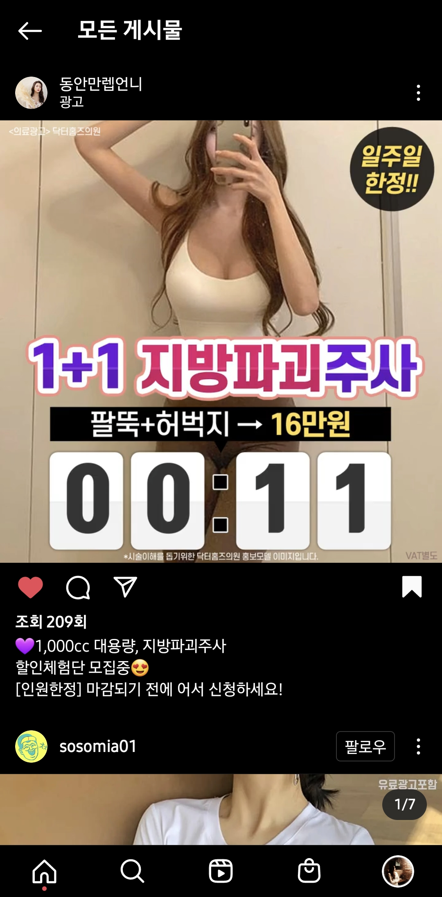
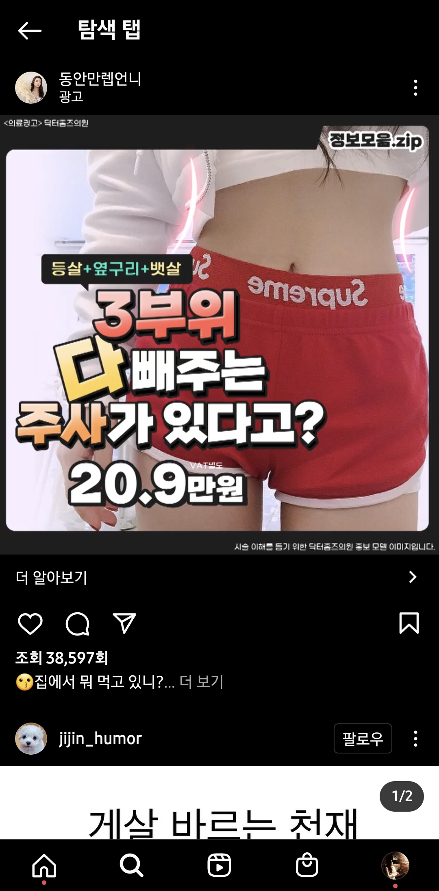
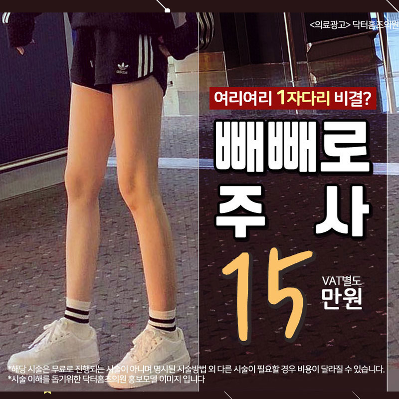

광고 운영부터 소재 기획·제작까지 전 사이클을 직접 담당하는 피부과 퍼포먼스 마케터. 병원 MSO(메디빌더)와 단일 병원 인하우스(더블어스) 양쪽 환경에서 숫자에서 인사이트를 꺼내 콘텐츠로 이어붙이는 방식으로 성과를 만들어왔습니다.
상품별 퍼널을 분해해보니, 획득DB단가(CPA)가 싸도 예약 전환이 낮은 저효율 상품에 예산의 상당 부분이 묶여 있었습니다. 문제는 "어떻게 더 싸게 DB를 살 것인가"가 아니라 "어떤 상품에 예산을 태울지"를 다시 설계해야 한다는 것이었습니다.
| 단계 | 기간 | CPA 변화 | ROAS | 월 광고기여매출 |
|---|---|---|---|---|
| 직전(기준) | 2024년 | 기준 (12,811원) | 3.0 | 76.8M |
| 입사 직전 (집행 위축) | 25.01~03 | 기준 수준 | — | ~31M · 광고비 급감 |
| 입사직후 (집행 재가동) | 25.04~06 | +33% | 3.0 | 40M |
| 1차 개선 | 25.07~09 | −20% | 3.5 | 60M |
| 안착 | 25.10~12 | −32% | 6.6 | 69M |
| 확장 | 26.01~04 | −7% | 4.5 | 181.6M (+136%) |
입사 직전 주력 상품 판매 중단 이슈로 광고 집행이 급격히 위축된 상태. 입사 후 집행을 재가동하며 규모를 키우는 과정에서 CPA가 일시 상승(정상적 구간). 7월부터 상품 가격 최적화 및 예산 재배분 효과가 나타나며 반전, 10~12월 ROAS 6.6배 정점. 확장기에도 CPA를 2024 이하로 유지.
피부체형 센터 주력 상품 소재. 올타이트는 가격소구 중심, 올리디아는 시술 효과 중심, 색소지우개는 저단가 신규 상품 소구로 각 상품 특성에 맞게 기획했습니다.
ROAS 개선은 CPA 최적화만으로는 한계가 있고, 상품 구조와 예산 배분을 함께 설계할 때 가능합니다. 같은 획득DB단가에서 어떤 상품에 쓰냐가 결과를 갈랐습니다.
효율 부진으로 센터 자체가 종료된 상태에서 담당하게 됐습니다. 재론칭하더라도 광고비를 키우면 소재 피로가 가속되고 CPA가 오를 것이 예상되는 상황. "다시 키우면서도 효율을 지킬 수 있는 운영 방식"이 필요했습니다.
단순히 자주 바꾼 게 아니라, 포맷·소구점·모델이라는 축 자체를 바꿔야 같은 상품에서도 CPA가 회복된다는 것을 32건 데이터로 확인했습니다.
| 단계 | 기간 | CPA 변화 | ROAS | 월 광고기여매출 |
|---|---|---|---|---|
| 직전(기준) | 2024.08~25.03 | 기준 | 2.8 | 29.3M |
| 입사직후(집행 축소) | 25.04~08 | — | 2.9 | 집행 거의 없음 |
| 재론칭 스케일 1차 | 25.09~12 | −23% | 5.6 | +292% |
| 확장 | 26.01~06 | −4% | 5.1 | +636% |
롱래스팅 센터 재론칭 후 제작한 눈썹문신 광고 영상. 기존 소재가 피로해진 시점에 포맷과 소구점을 다른 축으로 바꿔 CPA를 회복시킨 컨셉 전환 소재입니다.
소재 교체의 핵심은 "속도"가 아니라 "같은 메시지의 변주를 넘어서는 것"이었습니다. 포맷·소구점·모델이라는 다른 축을 바꿔야 진짜로 피로가 회복됐고, 이 운영 패턴이 누적되며 완전히 꺼졌던 캠페인을 스케일까지 키울 수 있는 기반이 됐습니다.
광고대행사 위탁으로 ROAS가 110%까지 떨어진 시점에 직접운영으로 복귀. 단순 회복이 아니라 역대 최고 ROAS를 목표로 구조적 개선에 도전. 매출 지표를 분해하자 객단가가 다른 매체 대비 50% 수준이라는 근본 원인이 보였습니다.
ROAS 개선은 광고비 축소 또는 매출 상승, 두 방향이 있습니다. 성장 중인 병원 상황을 고려해 광고비는 유지하면서 매출 상승으로 ROAS를 끌어올리는 방향을 선택했습니다.
| 시점 | ROAS | 비고 |
|---|---|---|
| 대행사 위탁 직후 | 110% | 전체매체 평균 절반 수준, 위기 |
| 직접운영 복귀 (2월) | 110→180% | 객단가 전략 설계·투입 |
| 3개월차 (4월) | 270% | 패키지 상품·배너 리뉴얼 효과 |
| 목표 달성 (5월) | 290% | 역대 최고, 목표 250% 초과 |
단일 저가 상품에서 다부위 묶음 패키지로 전환한 광고 배너. 가성비 구성으로 중저가 타겟의 구매 허들을 낮추면서 객단가를 끌어올렸습니다.


ROAS 개선은 운영 기술 최적화만으로는 한계가 있고, "어떤 상품을, 누구에게, 어떻게 패키징해서 보여줄지"를 함께 설계해야 한다는 것을 확인했습니다. GFA에 동일 전략을 적용해 ROAS 500%라는 추가 성과로 재현성을 검증했습니다.
콜성과 데이터를 매체별로 재가공해 분석하던 중 페이스북 예약률(18%)이 다른 배너광고 평균보다 크게 낮다는 것을 발견했습니다. 원인을 분석하니 부재율 60%+, 가격만 묻는 콜, 수술로 오인하는 문의가 다수였습니다. 페이스북 광고 운영담당자로 추가 배정되어 이 문제를 해결해야 했습니다.
트래픽광고는 예약률 개선에 도움이 되지만 전환단가가 높아지는 게 고질적 문제였습니다. 단순히 광고유형만 바꾸는 게 아니라, 그 유형에 최적화된 배너를 다시 기획해야 두 문제를 동시에 해결할 수 있었습니다.
같은 상품이지만 광고 유형에 따라 소재를 완전히 다르게 기획했습니다. 잠재광고는 가격 표기·즉시 신청 유도, 트래픽광고 영상은 가격 미표기·나이 표기·호기심으로 클릭 유도.

광고유형과 배너 콘텐츠는 세트로 바꿔야 효과가 납니다. 유형만 바꾸고 배너를 그대로 두면 새로운 전환경로에 맞지 않아 효율 개선이 제한적입니다. 전환 과정의 차이를 이해하고 고객 행동을 역방향으로 설계하는 것이 핵심이었습니다.